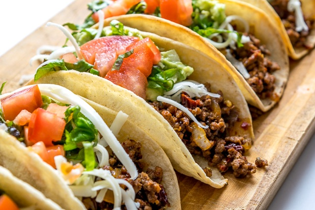

Home Page
Spanish Tacos

This simple dish is one of my all time favorites since it's easy to make and also delicious.
Although it was originally from Mexico, people from all diferent types of cultures created different variations.
Ingredients
- Tortillas
- Ground Turkey
- Tomatoes
- Onions
- Cheese
- Salso Verde (optional)
How to make Spanish Tacos
- Begin by seasoning the ground turkey with salt, pepper, and adobo.
Feel free to add any other seasing as you wish. While you season the meat, pre heat the stove top to a medium/high setting and add a half cup of vegetable oil.
- Once the oil is hot throw in your ground turkey. Turn the meat on all sides to make sure its evenly cooked. While that cooks you can begin prepping your vegetables.
- Grab your onions and tomatoes and dice them up. You can cook them if you prefer but I usually eat them raw.
- Once the meat is done cooking, seperate it to another bowl. Drain any excess water first.
- Seperate your tortillas, diced onions, tomatoes, and shredded cheese in different bowls.
- Thats it! Now you assemble your tacos with all of the ingredients you just made. You can add hot sauce or salsa verde if you wish.